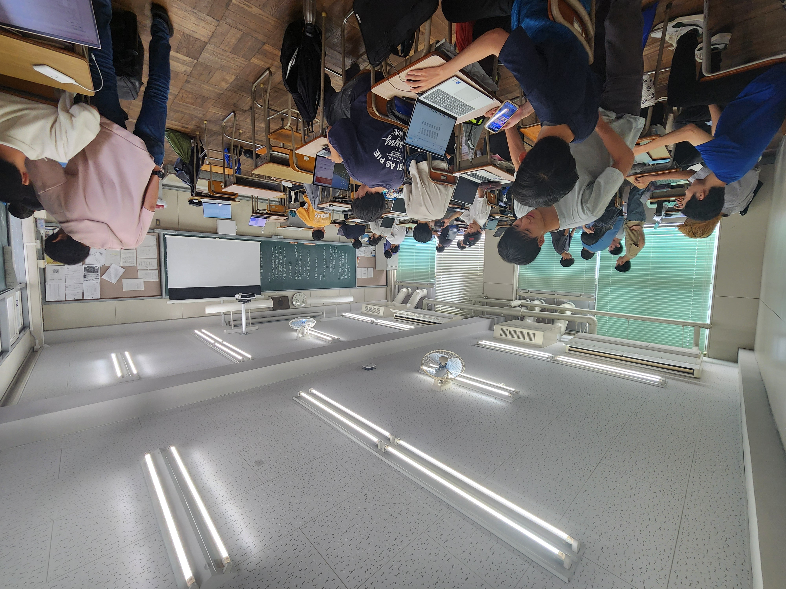
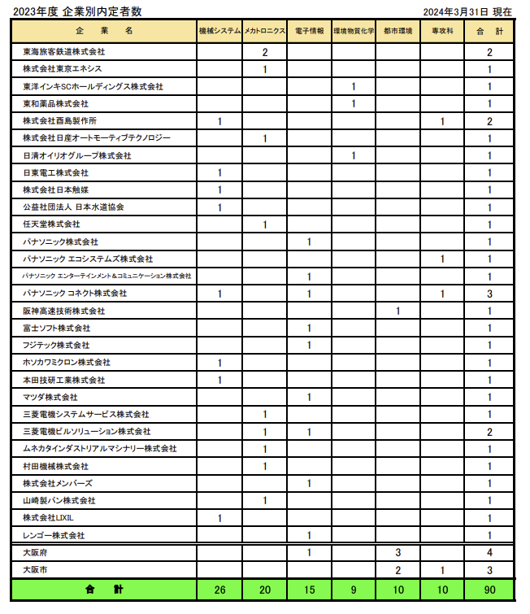

目次
コース概要
大阪公立大学高専のエネルギー機械コースは、持続可能な未来を創造するためのエネルギー技術と機械工学の知識を深めることを目的としています。本コースでは、理論と実践を融合させたカリキュラムを通じて、次世代のエネルギー問題解決に貢献できるエンジニアを育成します。
教育の特徴
エネルギー機械コースでは、他コースと比べ、比較的簡単な教科が多いです。言い換えればレベルが低いわけですが、そのかわり自分のペースでの学習がやりやすいです。
カリキュラム
エネルギー機械コースでは、流体力学や熱力学などの基礎的な科目に加え、旋盤やフライス盤などを用いた実習や、CADなどの実践的な科目を主に行います。それに加え、ICT技術を扱う情報や、起業家精神や金融リテラシーを身につける応用専門概論なども行います。もちろん、数学や物理などの科目も並行して行います。
進路とキャリア
大阪公立大学高専の卒業生は、多くの企業から高く評価され、高い就職率を誇ります。求人倍率は20倍程度です。進学面では、90%以上の学生が国公立大学に編入し、京大や阪大などの難関大学にも進学可能です。学費を抑えつつ、現役合格が目指せます。エネルギー機械コースでは多くの大学に設置されている工学部機械工学科への進学がしやすいです。

入学案内
エネルギー機械コースを志望する方は、入試情報をご覧ください。詳細な入試要項やスケジュール、過去問題などを提供しています。